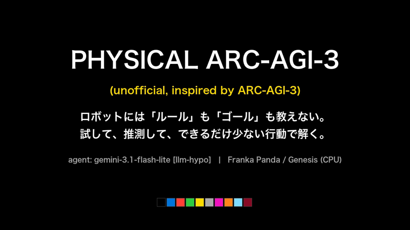
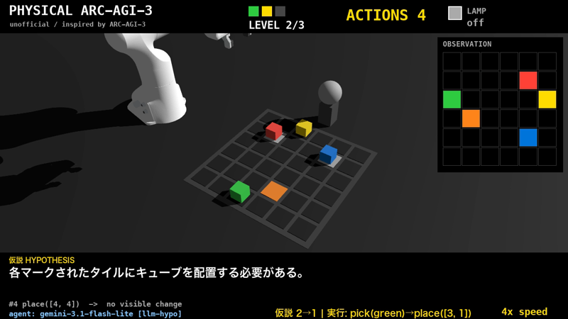
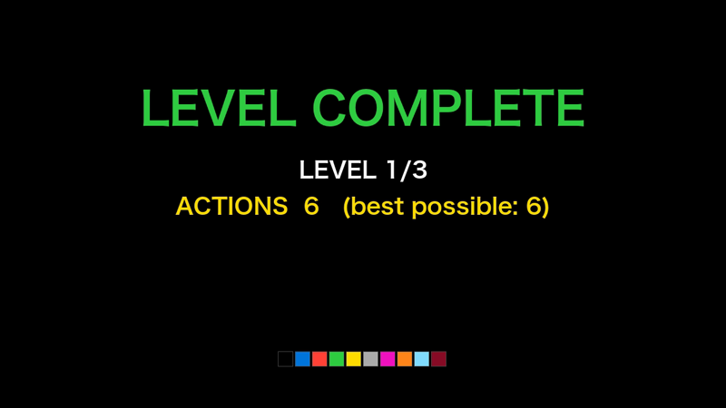
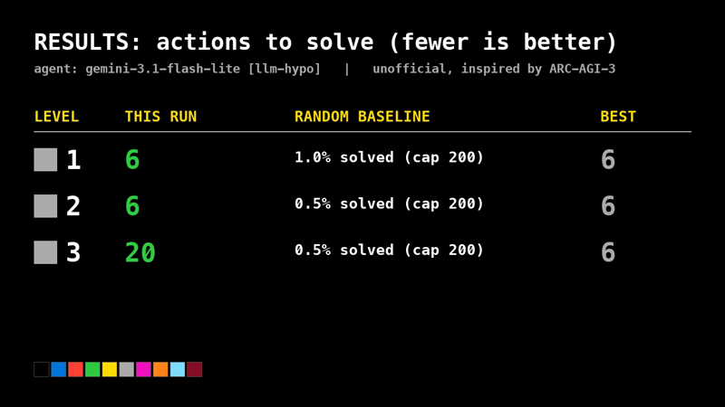

ロボットアームに、ルールも目標も教えないまま卓上のパズルを解かせる環境と LLM エージェントを作った。6x6 の盤面に ARC 標準パレットの色タイルとキューブを置き、アームの行動は pick(object) と place(cell) の 2 種類だけである。毎ターン、エージェントは盤面の整数格子・ランプの状態・キューブの位置・行動履歴を受け取り、日本語の短い仮説と次の行動を返す。レベルは 3 つ(色合わせ、スイッチによる隠れた目標の出現、数え上げ)で、隠れたルールは見えるフィードバックだけから推測するしかない。学習(重みの更新)は行わず、推論だけで動かす。
同じモデル(Gemini gemini-3.1-flash-lite、無料枠)で、LLM の使い方だけが違う 3 条件を比べた。プロンプトだけの llm-plain、ARC-AGI-3 の Kaggle コンペ Milestone 1 上位勢の安い工夫を足した llm-tricks、そして本課題の提案である llm-hypo である。llm-hypo は、LLM に仮説を Python の関数として書かせ、手元のコードで反証し、残った仮説を最もよく見分けられる実験を選んでから動く。ロボットの一手は高コストで取り消せないので、シミュレーションの中で考えてから動くという発想である。
ARC-AGI-3 は 2026 年 3 月 25 日に公開された、ARC-AGI シリーズ初の完全に対話型のベンチマークである。環境はターン制で、説明もルールも目標も与えられず、エージェントは自分で探索して仕組みと勝ち方を見つけ、少ない行動数で進むことを求められる。環境は Core Knowledge の事前知識(物体性、基本的な幾何とトポロジー、基本的な物理、エージェント性)だけで解けるよう作られ、言語や文化的記号は使わない。技術報告によれば、人間は全環境を解ける一方、公開時点の最先端 AI の得点は 1% 未満だった(公開記事では 0.51%)。得点は人間の行動数を基準にしたレベルごとの行動効率(の 2 乗)で付き、場当たり的な総当たりは評価されない。
この「学習済みの知識を引き出す」のではなく「その場で未知の環境に適応する」能力を、ロボットの文脈に持ち込む意味は大きいと考えた。現場のロボットは、初めて見る道具、取扱説明書のない機構、配置の違う環境に出会う。重みを更新せず、観測と少数の試行だけで規則を推測して行動を修正できれば、環境ごとの再学習なしに使える範囲が広がる。物理版にすると把持の失敗や積み上げの不安定さのような実世界の手間が混ざり、しかも一手ごとのコストが画面上のパズルより重い。
出典: https://arcprize.org/blog/arc-agi-3-launch (公開日、形式、人間 100% / AI 0.51%)、https://arcprize.org/media/ARC_AGI_3_Technical_Report.pdf (4 能力、Core Knowledge、行動効率と得点)。
盤面は 6x6 の床タイルで、色は ARC の標準 10 色。動かせるのは単色のキューブ 4 個(赤・青・緑・黄)で、占有セルへの place は積み上げ(最大 4 段)になる。盤面の脇のランプは灰色で、レベルを解くと緑に点く。実行した行動はすべて数える。エージェントに伝えるのは、行動の種類、盤面が ARC 色の格子であること、「何か未知の条件でレベルが完了しランプが点く」こと、できるだけ少ない行動で解くこと、の 4 点だけで、ルールと目標は伝えない。
| レベル | 隠れたルール(エージェントには非公開) | 見える中間フィードバック | 最短 |
|---|---|---|---|
| L1 色合わせ | 同じ色のタイルにキューブを置くとそのタイルが点灯。3 枚すべて点灯でランプ。黄キューブは対応タイルのない囮。 | 点灯したタイルに白い枠が付く | 6 |
| L2 因果スイッチ | 目標タイルは灰色で隠れ、オレンジのスイッチにキューブが載っている間だけ色が現れる。現れた色に合わせる。スイッチ用に余りのキューブが 1 個必要。 | 灰色が色に変わる / スイッチに枠 | 6 |
| L3 数え上げ | マーカー(マゼンタ)が N=3 個並ぶ。水色タイルにちょうど N 個の塔を作るとランプが点く。 | 積むたびにマーカーが 1 個ずつ点灯 | 6 |
各レベルは前のレベルの仮説がそのままでは通用しないように作った。L1 の「同じ色に置く」は L2 では隠れた目標を見つけてからでないと使えず、L3 では色ではなく個数がルールになる。
毎ターン、エージェントには、床の色の格子とキューブを重ねた上面の格子(どちらも整数)、点灯したセル、ランプの状態、キューブの一覧、このレベルの実験メモ(行動とその結果として見えた変化)、前レベルの教訓を文章として渡す。行動を実行するとロボットが動き、実行後のキューブの姿勢から状態を作り直し、ルールモジュールがフィードバックを返す。それが次のターンの観測になる。仮説は動画の画面下にも表示される。
llm-plain は競合する 2〜3 個の仮説と 1 手を JSON で返させるだけの条件である。llm-tricks はそこに、直前の差分の要約、効果のなかった置き方の記憶、既に訪れた盤面への警告、1〜4 手のまとめ出し、レベルをまたぐノートを足した。これらは Milestone 1 上位勢の報告にある安価な工夫を借りたものである。
llm-hypo では、LLM が「ランプが点く条件」を lit(state) という Python 関数の形で 2〜4 個書く。コードは、これまでに観測した全ての盤面とランプの状態に対して各関数を制限付きで実行し(import 不可、時間制限付き)、食い違うものを API 費用なしで捨てる。次の行動は、キューブを 1〜3 手動かして届く盤面のうち、生き残った仮説の予測が最も割れるものを選ぶ。全ての仮説が「ここでランプが点く」で一致したら、その計画を実行する。ここで使うシンボリックなモデルは、キューブがどこへ移るかという物理の遷移を予測するだけで、ルールモジュールの判定(ランプが点くか)は一切呼ばない。未訪問の盤面でランプが点くかどうかを知る手段は、LLM が書いた仮説だけである。
キーが無い場合は、オフラインのヒューリスティックが代わりに動く。これは 3 種類の仮説族と探索順序を私が手で書き込んだもので、LLM ではない。動画では agent: offline heuristic と表示する。
| 能力 (技術報告) | 本システムでの対応 |
|---|---|
| 探索 (exploration) | ルール不明のまま、キューブをいろいろなタイルに置いてフィードバックを引き出す最初の数手。未試行のマーク付きセルも観測として渡す。 |
| モデル化 (modeling) | llm-hypo の lit(state) 仮説プログラム。観測との矛盾で自動的に捨てられ、生き残りが次の実験を決める。 |
| 目標設定 (goal-setting) | 何を達成すればランプが点くかを自分で決める部分。目標は与えず、枠の増減とランプの変化から推測させる。 |
| 計画と実行 (planning) | 仮説が一致した後の最短手順の探索(幅優先、最大 3 手)と、行動数の節約。予想外の結果が出たらまとめ出しを打ち切って立て直す。 |
数値は物理なしの記号評価(./eval.sh)で、各セルは「到達率 / 到達したエピソードの平均行動数」。ランダムとヒューリスティックの行は 200 エピソード・上限 200 行動、LLM の行は上限 40 行動で、エピソード数が少ない(行ラベルに記載)。最短は 3 レベルとも 6 行動。LLM の行は scripts/final_run.sh による最終実行(2026-10-24、gemini-3.1-flash-lite)の結果で、括弧内は 1 レベルあたりの平均 LLM リクエスト数。
| エージェント | L1 | L2 | L3 |
|---|---|---|---|
| ランダム(200 エピソード、上限 200) | 1% / 108 | 0.5% / 46 | 0.5% / 110 |
| オフライン・ヒューリスティック(手書き。LLM ではない) | 100% / 6 | 100% / 8 | 100% / 6 |
| llm-plain(n=2) | 50% / 6(25.5) | 100% / 6(9.5) | 50% / 20(43.5) |
| llm-tricks(n=3) | 67% / 6(5.0) | 33% / 6(9.3) | 0% / —(16.0) |
| llm-hypo(提案。n=3) | 100% / 6(1.7) | 67% / 29(18.7) | 0% / —(27.3) |
| 最短(理論値) | 6 | 6 | 6 |
ヒューリスティックは、規則の族を知っている人間が手で書いた参照値であり、LLM ではない。LLM がどこまで近づけるかの目安にはなるが、同列の比較対象ではない。ランダムは 200 行動の上限内にほとんど解けず、何も考えずに動くだけでは足りないことを示す下限になっている。
物理シミュレーション上の本番デモ(llm-hypo、上限 30)では、L1 と L2 を最短の 6 行動、L3 を 20 行動で解き、3 レベルすべてでランプを点灯させた(動画)。記号評価では、llm-hypo は L1 を 3 回とも最短で、しかも平均 1.7 リクエストという少なさで解いた。仮説を手元のコードで反証し、見分けられる実験だけを実行に回すため、LLM を呼ぶ回数そのものが減ることが効いている。一方で L2・L3 では条件間の差ははっきりせず、L3 は llm-plain が 2 回中 1 回解いたのに対し llm-hypo は 3 回とも上限内に解けなかった。前日の実行(修正前のコード)では L2 が llm-hypo 3/3、llm-tricks 0/2 と逆の傾向も出ており、エピソード数が 2〜3 と少ない現状では、どの条件が優れているとも結論できない。ばらつきの主な原因は、LLM が最初に立てた「色合わせ」の仮説から離れられないことで、仮説を正しく反証できても、正しい仮説を新しく思いつけなければ先に進めない。これは Tycho の報告(世界モデルが正確でもゴールの特定は別問題)とも一致しており、今後は仮説生成の多様化(温度・別モデル・反例の提示)とエピソード数の増加が課題である。




スクリーンショットは動画(Genesis のレンダリングに HUD を重ねたもの)から切り出した。動画は --speed で倍速化している。
物理とゲームロジックは分けた。ロボットは行動を実行するだけで、判定をしない。実行後にシミュレータからキューブの姿勢を読み、水平位置を最寄りのセルにスナップし、高さ順に並べて「どのセルに何段積まれているか」を作る。この状態だけを純 Python のルールモジュール(game.py)に渡すと、点灯するタイル、灰色タイルの色、ランプが返り、画面に表示される。観測はシミュレータの内部変数ではなく実際の姿勢から導出しているので、把持に失敗してキューブが動かなければ、ゲーム側にもそれが現れる。同じ game.py は物理なしの高速評価にもそのまま使える。
LLM の出力は、JSON として読めるか、行動が今の盤面で合法か、llm-hypo では仮説コードが関数として動くか、既に観測と矛盾していないかを検証する。不正なら理由をそのまま返して最大 3 回まで再生成させ、それでもだめなら打ち切る。Gemini の無料枠では 429 や 5xx、タイムアウトが起きるので、10 秒から最大 90 秒まで倍々に待つ指数バックオフで最大 6 回再試行し、1 日の上限に達したときは終わった分だけ残して止まる。全リクエストとレスポンス、実行した判断、検証エラーは outputs/agent_log.jsonl に記録し、--replay でそのログから動画を作り直せる。仮説コードは許可した組み込み関数だけの制限付き環境で、時間制限をかけて実行する。
失敗の分析から、LLM の癖がはっきり見えた。L3 では、点灯したマーカーを「目標の置き場所」と読み、L1 の色合わせの発想に戻ってしまう例が目立った。仮説をコードにすると別の失敗も出る。空のリストに対する all() は真になるため、何も言っていないのに常にランプが点くと予測する仮説(空虚な真)ができる。また、型の取り違えで発火しない仮説もあった(セルをリストと比べるなど)。これらには一般的な対処を入れた: セルやタイルの型を寛容にして list と tuple のどちらでも比べられるようにし、空虚な真への注意をプロンプトと反証メッセージに入れ、観測済みの状態の表と heights() を渡し、行動が出ないときの代替行動には回数の上限を付けた。特定のレベルの答えを教える対処は入れていない。
限界も多い。状態は真の姿勢からセルを割り出しており、視覚認識を含まない。3 レベルはそれぞれ 1 つの規則で解けるため、ARC-AGI-3 の難しさや多様さには遠く及ばない。また ARC-AGI-3 は言語や数字、文化的な記号を避けているが、本作品は日本語の仮説を書かせ、L3 は個数を数える課題で、ランプの色にも意味がある。得点も ARC-AGI-3 の行動効率の指標ではなく、単純な行動数である。評価の回数は無料枠の制限のため少なく、LLM の応答も実行ごとに変わるので、条件間の優劣の結論は出せない。ヒューリスティックの数字は規則を知った上で書いたものである。
ARC-AGI-2(2025)では、テスト時に重みを更新するテスト時学習が上位を占め、優勝した NVARC は 24.03% だった(https://arcprize.org/blog/arc-prize-2025-results-analysis)。ARC-AGI-3 の Milestone 1 では、上位 3 チームがローカルで動くオープンな LLM を使ったハーネスで、1 位は Qwen 系のモデルが REPL で Python を実行する構成、2 位は Gemma 系が JSON で変化の説明と 1〜4 手の計画を返し反省メモを持つ構成だった。1 位は手作りのツールを減らすほど良かったと報告している(https://arcprize.org/blog/arc-prize-2026-milestone-1)。llm-tricks は後者のような安い工夫を、API 経由のモデルに移したものにあたる。
実行可能な世界モデルを LLM に書かせる研究は既にある。WorldCoder(https://arxiv.org/abs/2402.12275)はコードで世界モデルを書き、環境との相互作用で直す。Hypothesis Search(https://arxiv.org/abs/2309.05660)は仮説を生成して検証する。ARC-AGI-3 に対しては、Rodionov が Python の世界モデルを観測で検証しながら計画に使い(https://arxiv.org/abs/2605.05138、GPT-5.5 で公開 25 ゲームの平均 RHAE 58.12%)、Tycho が仮説の構築・検証・修復を扱い、モデルの再現精度が高くてもゴールの特定が良くなるとは限らないことを示した(https://arxiv.org/abs/2607.28287)。OPINE-World(https://arxiv.org/abs/2607.01531)と Rodionov の続報(https://arxiv.org/abs/2607.15439)は調査メモに挙げたが、本文は精読していない。
以上から、仮説プログラムを手元で反証すること自体は新しくない。本課題が足したと考えるのは二点で、一つは、この枠組みを物理のロボットアームによる ARC-AGI-3 風の課題に適用したこと、もう一つは、ロボットの行動が高コストで取り消せないことを動機に、生き残った仮説を最もよく見分ける実験(行動)を選ぶようにしたことである。後者について、調べた範囲では明示的な例を見つけられなかったが、それは新規性の証明ではない。調査は限られており、見落としている可能性が高い。
再現可能な環境という観点では、依存を uv と requirements.txt のバージョン固定で揃え、物理シミュレーションを決定的にし、レベルの初期配置をコードで固定した。さらに LLM とのやり取りをすべて記録して、あとから同じ判断を再生できる。環境と評価を壊さずに回し続け、結果の出どころを追えるようにするという意味で、ロボットの運用(RobOps)の最小の形を試したと考えている。評価も 1 コマンドで再実行でき、最終実行は 1 本のスクリプトにまとめた。
もう一つは、オープンソースのシミュレータの価値である。Genesis がオープンなので、見た目だけのタイルの出し入れやランプの追加、把持の調整といった環境側の改造を自由にでき、既存のベンチマークを使うだけでなく、自分の問いに合わせた評価環境を作れた。中身が開かれているからこそ、動作の原因を確かめながら直せる点が、ブラックボックスな環境との大きな違いだった。
再現手順は README を参照(./run.sh, ./eval.sh, scripts/final_run.sh)。Python 3.11 / Genesis 1.4.4 / PyTorch 2.14.1。